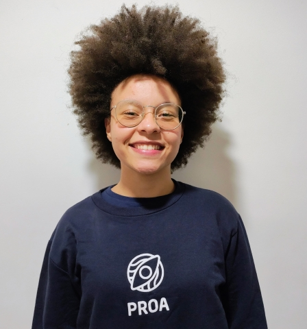

Prazer em Conhecer
Olá! Eu sou a Ana Julia Lima — ou só Naju. Sou técnica em Desenvolvimento de Sistemas e estudante focada em desenvolvimento mobile. Desde cedo, percebi que a tecnologia é uma ponte incrível entre ideias e impacto real — e é isso que me inspira todos os dias. Me formei na ETEC de Guaianases (onde tive contato com várias tecnologias, linguagens, e conheci a tecnologia e a programação), e atualmente estou no Proprofissão, do Instituto Proa, onde sigo me aprofundando em Kotlin e Android Studio. Meu foco é criar soluções que façam sentido, tanto tecnicamente quanto socialmente. Sou curiosa, comunicativa, proativa e movida por desafios. Gosto de pensar com empatia, proatividade e colaborar com pessoas que também acreditam na força da tecnologia com propósito.
Baixar o meu CVMapa de Carreira
Desenvolvedora Júnior Mobile
Após concluir minha jornada no Instituto Proa, meu objetivo é me consolidar como desenvolvedora mobile júnior. Quero aprofundar ainda mais meus conhecimentos tanto em frontend quanto em backend, entendendo como cada parte do desenvolvimento contribui para a construção de soluções completas. Busco desenvolver aplicações com alto nível de usabilidade, acessibilidade e com propósito social, contribuindo para o bem-estar de quem utiliza.
Soft Skills exigidas para essa carreira:
- Comunicação assertiva
- Proatividade na busca por soluções
- Curiosidade e sede de aprendizado contínuo
- Organização e gestão de tarefas
- Resiliência diante de desafios técnicos
Roadmap de Aprendizado:
- Kotlin
- Android Studio
- Jetpack Compose
- MongoDB
- Git/GitHub
- UI/UX (Figma)
Desenvolvedora Sênior Mobile
Nesta etapa, quero ser uma desenvolvedora sênior capaz de tomar decisões técnicas com segurança e experiência. Quero liderar projetos com excelência, promover boas práticas de código, e contribuir com soluções escaláveis, elegantes e bem estruturadas. Também pretendo apoiar desenvolvedores mais novos, colaborando com revisões, mentorias e trocas de conhecimento constantes.
Soft Skills exigidas para essa carreira:
- Autonomia técnica com responsabilidade
- Mentoria e apoio a outros desenvolvedores
- Visão crítica sobre arquitetura e performance
- Colaboração ativa com diferentes áreas
- Gestão do tempo e priorização de tarefas
Roadmap de Aprendizado:
- Testes de integração
- Kotlin Flow
- Revisão e análise de código
- Performance e otimização de apps
- Mentoria técnica
Desenvolvedora Pleno Mobile
Nesta etapa, quero me posicionar como uma desenvolvedora capaz de atuar em equipes ágeis, contribuindo ativamente com a construção de soluções robustas, modernas e de alta qualidade. Desejo dominar a integração de APIs, autenticação, testes e arquitetura de apps. Além disso, pretendo colaborar com a experiência do usuário de ponta a ponta, pensando sempre na jornada e na eficiência.
Soft Skills exigidas para essa carreira:
- Trabalho em equipe em ambientes ágeis
- Pensamento crítico e analítico
- Comunicação assertiva e colaborativa
- Adaptabilidade a novas ferramentas e contextos
- Autonomia para tomada de decisões técnicas simples e complexas
Roadmap de Aprendizado:
- Clean Architecture
- MVVM
- Coroutines
- Retrofit
- Testes unitários
Tech Lead Mobile
No Instituto Proa, tive a oportunidade de atuar como Product Owner, e essa vivência despertou em mim a vontade de voltar a exercer uma função de liderança. Como Tech Lead Mobile, quero liderar com empatia e responsabilidade. Pretendo guiar decisões técnicas e arquiteturais, apoiar o crescimento da equipe, incentivar boas práticas e construir produtos que realmente impactem a vida das pessoas. Meu foco será unir estratégia, tecnologia e propósito.
Soft Skills exigidas para essa carreira:
- Liderança colaborativa e inspiradora
- Visão estratégica de produto e tecnologia
- Capacidade de mentorar e desenvolver talentos
- Comunicação interpessoal
- Tomada de decisão assertiva
- Gestão de conflitos com inteligência emocional
Roadmap de Aprendizado:
- CI/CD para Android
- Arquiteturas escaláveis
- Firebase avançado
- Monitoramento (Crashlytics, Analytics)
Arquiteta de Software Mobile
Meu objetivo como Arquiteta de Software Mobile é projetar a espinha dorsal de sistemas complexos, escaláveis e resilientes. Desejo construir arquiteturas sólidas, modulares e eficientes, que possam suportar o crescimento e a inovação ao longo do tempo. Também quero trabalhar com diferentes plataformas e liderar a inovação mobile.
Soft Skills exigidas para essa carreira:
- Visão sistêmica e pensamento arquitetural
- Tomada de decisão crítica com base técnica e visão de futuro
- Inovação contínua e curiosidade tecnológica
- Capacidade de simplificar sistemas complexos
- Comunicação clara com públicos técnicos e não técnicos
- Liderança técnica em múltiplos projetos simultâneos
Roadmap de Aprendizado:
- Micro frontends
- Modularização
- Multiplataforma (KMM, Flutter)
- Estratégias de deploy em escala
Soft e Hard Skills
Afinidade com as seguintes tecnologias e técnicas:
Frontend
-
Jetpack Compose
-
XML Layout
-
Figma (UI/UX)
Backend
-
Firebase (Auth, Firestore)
-
MongoDB
-
API com Retrofit
Outras
- Git/GitHub
- MVVM
- Clean Architecture
- Coroutines
- UI/UX Design
- Testes Unitários
- Android Studio
Idiomas
- Português (Nativo)